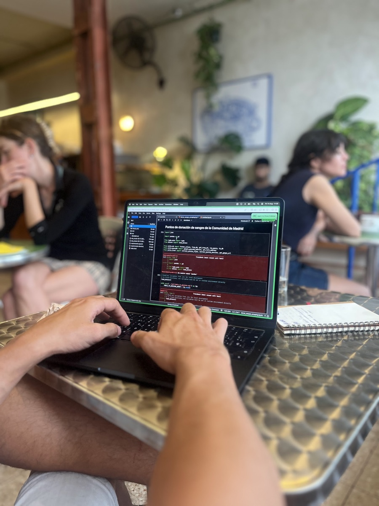
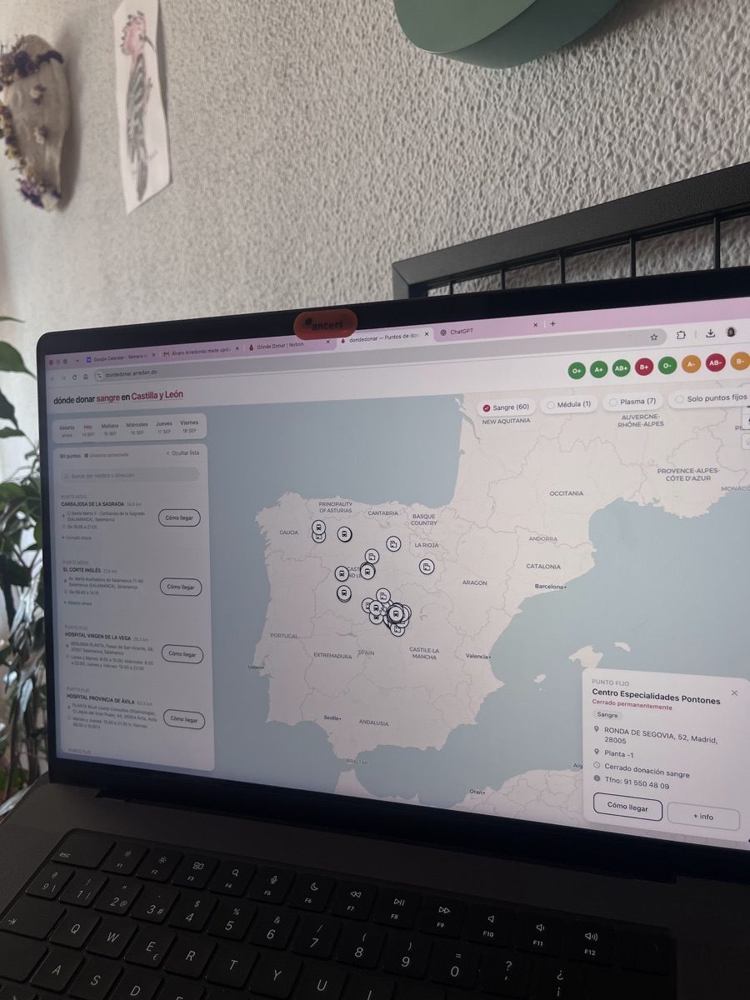

01
donde donar
Mapa interactivo con puntos de donación de sangre
Encontrar dónde donar no debería ser tan difícil. Actualmente, la información sobre dónde y cuándo donar está repartida entre diferentes organismos y comunidades autónomas. El objetivo del proyecto es reunirla en un único espacio y hacerla más fácil de consultar.
El problema
Las diferentes comunidades muestran la información sobre los puntos de donación móviles y fijos de maneras muy diferentes. En algunas encontramos listados de texto con los centros y sus horarios, en otras tablas y, en algunas, mapas. Esto hace que consultar y encontrar esta información sea una tarea complicada. Además, dentro de cada comunidad, la gestión de los puntos de donación también varía en función de la entidad responsable.
La información existe. El problema es encontrarla.
Mi papel
Trabajo junto a un data curator, definiendo la arquitectura de información, los flujos, el diseño de la interfaz y la experiencia de consulta.
Esta colaboración nos permite trabajar desde dos perspectivas complementarias: cómo organizar y hacer fiable el dato y cómo convertirlo en una experiencia útil para las personas.
Qué estoy haciendo
Estoy trabajando en la toma de decisiones, la arquitectura de información, definición de funcionalidades y diseño de la interfaz.
Claude Code como parte del equipo
Claude Code se ha convertido en un integrante más del equipo. Nos ayuda a explorar y tomar decisiones a partir de los datos, construir y mantener el backend y convertir rápidamente las ideas en producto. Esto nos permite trabajar de forma mucho más iterativa, conectando diseño, datos y desarrollo en un mismo proceso.

